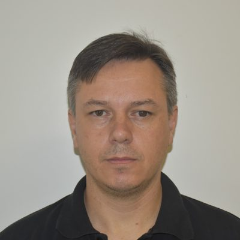
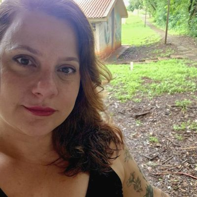
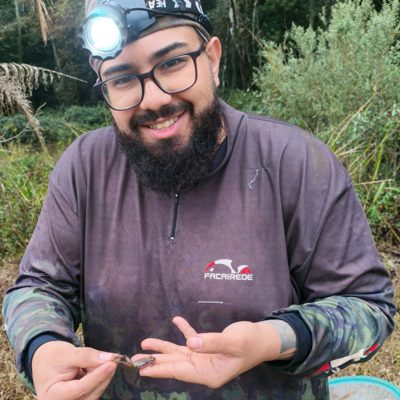
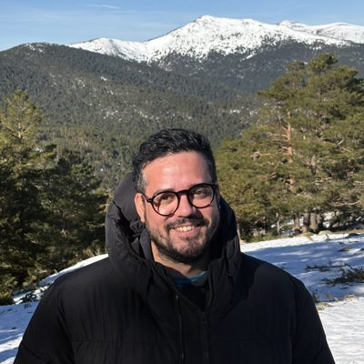
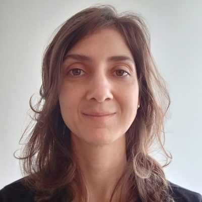

Confirmados até agora
Palestrantes

Vinicius Pires Rincão
MC01 · Locais de crime
Perito Criminal na Superintendência da Polícia Técnico-Científica de São Paulo. Biólogo, mestre e doutor em Microbiologia pela UEL.
Ms. Melissa Ebara
MC02 · Botânica em campo
Ministrante do minicurso de Identificação Botânica em Campo.

Fernanda Dotti
MC03 · Ilustração científica
Bióloga, doutora em Ciências Biológicas (Genética) pela UNESP, com pós-doutorado na Universidade de Santiago de Compostela. Docente na UENP, atua em Conservação Genética e Ilustração Científica.

Eder Silva Barbier
MC04 · Morcegos
UENP (CLM) · Captura e identificação de morcegos.

Lucas Henrique dos Santos
MC05 · Herpetologia
Doutor em Ciências Biológicas — PCB UEL. Atua com herpetofauna, do campo ao trabalho científico.

Sandra Mara Miranda Proni
MC06 · Educação Sexual Emancipatória
Professora de Biologia (SEED-PR) e mestre em Ensino pela UENP. Pesquisa Educação Sexual na formação de professores; supervisiona o PIBID na UENP Bandeirantes.
Rodrigo Poleto
MC07 · Educação ambiental e agroecologia
Mestre e doutor em Ciências Biológicas (Botânica) pela UNESP. Docente na UENP, atua em Fisiologia Vegetal, Agroecologia e Ensino de Ciências.
Reinaldo Marqui
MC08 · Vigilância em Saúde
O papel da Vigilância em Saúde para a Saúde Pública.
Dra. Caroline Santos
MC09 · Ecotoxicologia Aquática
Doutora em Genética e Biologia Molecular pela UEL. Atua em ecotoxicologia aquática, com experiência em diagnóstico de impactos ambientais (caso Brumadinho).

Deibson Pereira Belo
MC10 · Anatomia Vegetal
Mestre em Biologia Vegetal. Anatomia vegetal aplicada à taxonomia e delimitação de espécies de angiospermas.

Ana Clara Sans Salomão
Palestra · CRBIO
Coordenadora e Fiscal do CRBIO.